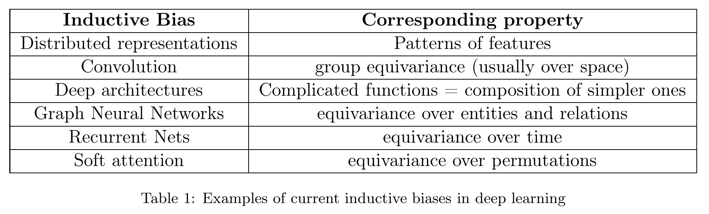

By LI Haoyang 2020.12.23
Higher-level Inductive BiasesContentInductive Biases for Deep Learning of Higher-Level Cognition - 2020Global Workspace TheoryInductive Biases ProposedOmitted PartsInspirations
Anirudh Goyal, Yoshua Bengio. Inductive Biases for Deep Learning of Higher-Level Cognition. arXiv preprint 2020. arXiv:2011.15091
Inductive biases, broadly speaking, encourage the learning algorithm to prioritise solutions with certain properties.

A fascinating hypothesis is that human and animal intelligence could be explained by a few principles (rather than an encyclopedic list of heuristics).
This hypothesis would suggest that studying the kind of inductive biases that humans and animals exploit could help both clarify these principles and provide inspiration for AI research and neuroscience theories.
This paper states some perspectives in a declarative way, the main claim is that it's time to incorporate high-level inductive biases in deep learning for stronger AI.
Basically, inductive biases are assumptions about the data.
In cognitive science, the Global Workspace Theory (GWT) (Baars, 1993) suggests an architecture allowing specialist components to interact.
The key claim of GWT is the existence of a shared representation—sometimes called a blackboard, sometimes a workspace—that can be modified by any selected specialist and that is broadcast to all specialists.
This theory states that brain works modularly, in which there exists a common information bottleneck that when a task is done, only some specific modules are excited and communicated through a global workspace. This theory reconciles with the von Neumann structure of computer.
Besides GWT:
Regarding the topology of the communication channels between modules, it is known that modules in the brain satisfy some spatial topology such that the computation is not all-to-all between all the modules.
Combining both:
It states that low-level modules have both the ability to communicate with low-level neighbors and high-level headquarters.
Based on the functioning of human brains:
Our brain seems to thus harbour two very different types of knowledge:
- the kind we can explicitly reason about and communicate verbally (system 2 knowledge) and
- the kind that is intuitive and implicit (system 1 knowledge).
It looks like current deep learning systems are fairly good at perception and system 1 tasks.
Humans enjoy system 2 abilities which permit fast learning (I can tell you a new rule in one sentence and you do not have to practice it in order to be able to apply it, albeit awkwardly and slowly) and systematic generalization, both of which should be important characteristics of the next generation of deep learning systems.
They proposes the following higher-level inductive biases:
High-level Representations Describe Verbalizable Concepts as Semantic Variables
What follows is maybe the most influential inductive bias we want to consider in this paper: that high-level variables (manipulated consciously) are generally verbalizable.
Semantic Variables Play a Causal Role and Knowledge about them is Modular
We are calling these variables manipulated consciously semantic variables because they can be verbalized. We hypothesize that semantic variables are also causal variables.
It seems to state that semantic meaning brings causality.
Local Changes in Distribution in Semantic Space
They attribute the non-stationarity of observed distributions in environment to the following sources:
The non-stationarity due to the environmental dynamics (including the learner’s actions and policy) not having converged to an equilibrium distribution (or equivalently the mixing time of the environment’s stochastic dynamics is much longer than the lifetime of the learning agent).
The agent is too young to observe all changes.
Causal interventions by agents (either the learner of interest or some other agents).
The agent itself brings changes.=
Based on the non-stationarity:
This is a very strong clue for our proposal to include as an inductive bias the assumption that most changes in distribution are localized in the appropriate semantic space: only one or a few variables or mechanisms need to be modified to account for the change.
Stable Properties of the World
The world is not always changing:
If we divide the knowledge about the world captured by the agent into the stationary aspects (which should converge) and the non-stationary aspects (which would generally keep changing), we would like to have as much knowledge as possible in the stationary category.
Therefore:
The proposed inductive bias (which now involves the whole system, not just system 2), is that there should be several speeds of learning, with more stable aspects learned more slowly and more non-stationary or novel ones learned faster, and pressure to discover stable aspects among the quickly changing ones.
Both the stationary and non-stationary parts should be learned.
Sparse Factor Graph in the Space of Semantic Variables
Our next inductive bias for high-level variables can be stated simply: the joint distribution between high-level concepts can be represented by a sparse factor graph.
Any joint distribution can be expressed as a factor graph, but we claim that the ones which can be conveniently described with natural language have the property that they should be sparse.
Not every two semantic variables are related.
Variables, Instances and Reusable Knowledge Pieces
A standard graphical model is static, with a separate set of parameters for each conditional (in a directed acyclic graph) or factor (in a factor graph).
The assumption is that the independent mechanisms (with separate parameters) which specify dependencies between variables are generic, i.e., they can be instantiated in many possible ways to specific sets of arguments with the appropriate types or constraints.
Relations between semantic variables should be generic, i.e. everything that can be linked to the same semantic variable should have the same relations.
Relevant causal chains (for learning or inference) tend to be very short
Our brains seem to segment streams of sensory input into meaningful representations of episodes and events.
It states that causal chains used to perform learning (to propagate and assign credit) or inference (to obtain explanations or plans for achieving some goal) are broken down into short causal chains of events which may be far in time but linked by the top-level factor graph over semantic variables.
It's sparse...
Context-dependent processing involving goals, top-down influence, and bottom-up competition
Top-down information encode relevant context, priors and preconceptions about the current scene: for example, what we might expect to see when we enter a familiar place.
Bottom-up signals consist of what is literally observed through sensation.
This can be summarized by stating an inductive bias in favour of architectures in which top-down contextual information is dynamically combined with bottom-up sensory signals at every level of the hierarchy of computations relating low-level and high-level representations.
What you think should be combined with what you see.
In the original paper, they also state about the link with computer programming, the causal models and the synergy between AI and cognitive science communities.
This is a nice perspective paper, although most of its viewpoints are declarative without sufficient supports presented.